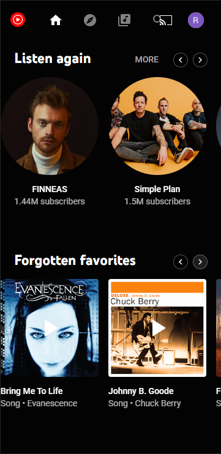

Rule of Thirds
unsplash.com
I chose this website because the picture displayed shows the rule of thirds in action. The rule of thirds is about composition. Notice how the eye naturally gravitates towards the laptop in the image. If you were to draw tic-tac-toe board on top of that image the laptop would be in the bottom-left corner of the top-right box.
PARC: Contrast
music.youtube.com In our lesson we learned that, “Contrast is designing a distinct difference between foreground and background colors in order to enhance readability.” YouTube Music has this mastered by using bold colors against a black background.
Visual Hierarchy
amazon.com
Amazon video uses create visual hierarchy to promote their big Blockbuster films and try to elicit a response to specific titles. Most of the videos displayed are based off of the users’ preferences. But the biggest displays are promotions.